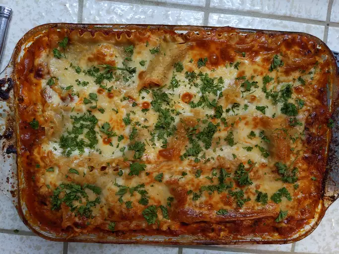

World's Best Lasagna

Description
Lasagna, a quintessential Italian dish, is a mouthwatering culinary masterpiece that delights palates worldwide.
Layers of wide, flat pasta sheets intermingle with rich, savory ingredients, creating a harmonious symphony of flavors and textures.
Traditional recipes typically feature a hearty tomato sauce, creamy béchamel, and indulgent cheeses like mozzarella, ricotta, and Parmesan.
This culinary marvel often incorporates seasoned ground meat, such as beef, pork, or sausage, adding depth and complexity to each bite.
Garnished with fragrant herbs like basil and oregano, each slice promises a savory indulgence that is both comforting and satisfying.
Whether served as a family dinner centerpiece or at festive gatherings, lasagna embodies the essence of comfort food,
inviting diners to savor its irresistible allure with every forkful.
Ingredients
- Meat: This super meaty lasagna has sweet Italian sausage and lean ground beef.
- Onion and garlic: An onion and two cloves of garlic are cooked with the meat to add tons of flavor.
- Tomato products: You'll need a can of crushed tomatoes, two cans of tomato sauce, and two cans of tomato paste.
- Sugar: Two tablespoons of white sugar add subtle sweetness and enhance the flavor of the sauce.
- Spices and seasonings: This lasagna recipe is flavored with fresh parsley, dried basil leaves, salt, Italian seasoning, fennel seeds, and black pepper.
- Lasagna noodles: Use store-bought.
- Cheeses: Parmesan, mozzarella, and ricotta cheese make this lasagna extra decadent.
- Egg: An egg helps bind the ricotta so it doesn't ooze out of the lasagna when you cut into it.
Instructions:
- Make the sauce meat.
- Cook the noodles.
- Make the ricotta mixture.
- Layer the lasagna (Meat sauce, Noodles, Ricotta mixture, Mozzarella slices, Meat sauce, Parmesan cheese
Repeat the layers, then top with the remaining Parmesan.)
- Cover with foil. 50 minutes to cook in an oven preheated to 375 degrees F.
Cover it with foil for the first 25 minutes, then let it cook uncovered for the final 25 minutes.
- Let the lasagna rest before serving.
Go back
Back